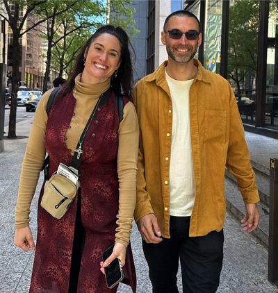
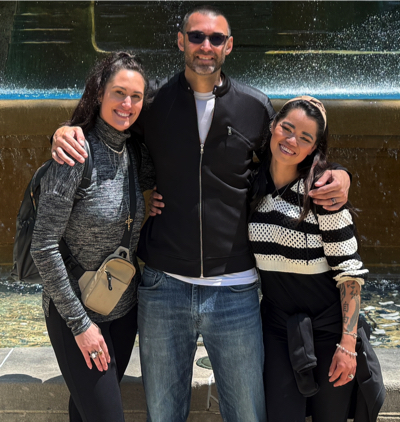
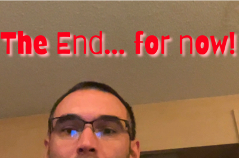

Here are some reason why my brother,
Glen Pearl is the cooliest around!

Glen is the best brother anyone could ask for,
and here are just a few reasons why:
- He's an unreal coder, which inspires me.
- He has a fantastic sense of humor that always makes me laugh.

- He is kind and always willing to help others.
- He's a badass who loves heavy metal on occasion.
- He is a great listener and always gives thoughtful advice.
- He's an extremely good singer... love when we sing fettuccine alfredo in stairwells!
- He's come to visit me on numerous occasions:
- He flew to Florida when I needed him most.
- He flew to stay with me recently when he needed support.
- He has invited me to come visit him so many times.

- He's really uped his game with his fashion sense:
- He can rock a black bomber jacket like no one else.
- He's found the specific colors that make him most comfortable
- He always looks effortlessly cool, even in casual outfits.
- He is phenomenal with interpretations! He can make me laugh endlessly with those.
- He is incredibly talented with anything hands on:
- He's a master at fixing things around the house.
- He can build just about anything with his hands.
- He's great at DIY projects and always has creative ideas.
To my brother, who inspired me to become a coder.
I wouldn't be here creating this webpage without his encouragement.
Check out Glen and Ellie's website Ecomgraduates!
I'll be forever grateful for having such an amazing brother like Glen!
